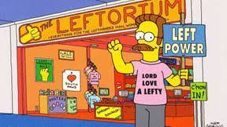

El Zurditorium es una tienda ubicada en el Springfield Mall especia- lizada en productos elaborados especialmente para personas zurdas.

El Leftorium era propiedad de Ned Flanders, quien había dejado su trabajo como empleado de una compañía farmacéutica para abrir la tienda. Al principio, el negocio en el Leftorium era muy pobre, debido al deseo secreto de Homero de que la tienda de Flanders cerrara. Homer cumplió su deseo y la familia Flanders se vio obligada a vender sus posesiones personales (muchas de las cuales Homer compró a un costo de 75 dólares); el banco embargó la casa de Flanders; y la tien- da estaba a punto de cerrar. Más tarde, Homer se arrepintió de haber pedido este deseo y de no haberle contado nunca a ninguno de sus amigos que necesitaban artí- culos para zurdos sobre The Leftorium. Para expiar sus fechorías, Homer logra que todos sus conocidos en la ciudad compren en la tienda de Ned, salvándola efecti- vamente de la bancarrota.